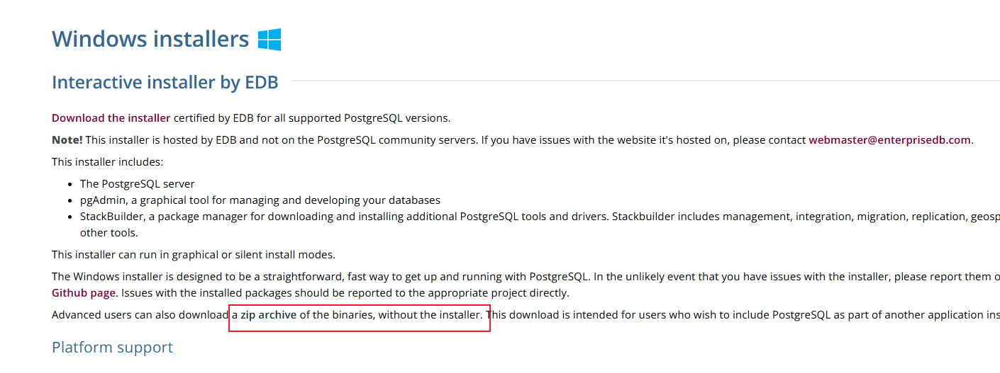
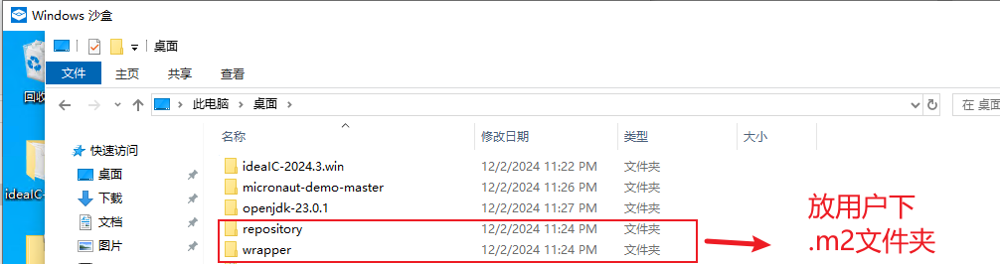
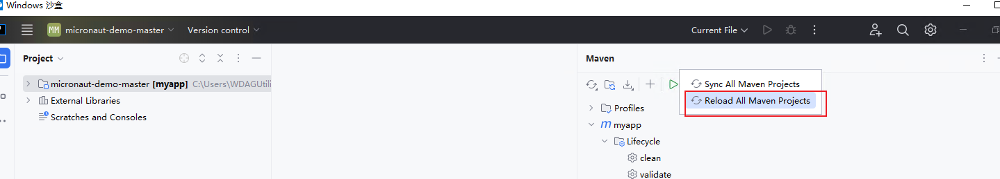

通用的部署流程以及对必要的无网开发调试环境搭建一、postgres及postgis数据库环境1.下载准备工作（1）下载postgres14解压版（2）下载postgres14对应的postgis 3.5解压版（3）下载dbeaver连接数据库（4）下载总结描述（dbeaver需要的jar包等）2.postgres使用2.1 初始化数据库2.1.1 如果遇到以下问题，解决方法，安装VC_redist.x64.exe2.1.2 部分库缺失使用DirectX修复工具 v4.3.7 增强版修复2.2 启动数据库2.3 启动相关，pg_ctl相关的使用说明关闭数据库重启数据库运行状态cd命令，跨盘跳转服务注册与删除（管理员身份，且是全路径）pg_ctl --help2.4 连接数据库相关，psql相关的使用说明登录简单使用2.5 dbeaver连接数据库使用如下jar包按如图所示逐个添加需要的jar包2.6 postgres14添加postgis插件2.7 数据备份还原（重点、重要）2.8 配置远程访问（可选）2.8.1（postgresql.conf）服务器配置 -> 连接连接和认证 -> 连接设置2.8.2（pg_hba.conf文件）客户端认证二、java开发和部署环境1.下载准备工作（1）下载IDEA解压版（2）在IDEA下载想要的JDK（3）下载要运行的java代码2.java本地开发调试环境2.1 IDEA打开java micronaut-demo代码2.2 IDEA内置maven一般不用下载2.3 等待项目下载完成，拷贝.m2内respository和wrapper2.4 特殊情况，aspose word，本地jar包上传到maven2.5 特殊情况，jdk过期强制在mvn下载时能不安全下载2.6 特殊情况，maven下载包时手欠点了try to run，重新删除maven resposity（暴力）2.7 特殊情况，java执行python脚本且需要conda环境部署的情况下，需要使用如下命令行命令：call、push、cd ..、start3.java部署环境3.1 将能在本地运行的环境拷贝到部署机器3.2 调试或打包三、python开发和部署环境
通用的部署流程以及对必要的无网开发调试环境搭建
一、postgres及postgis数据库环境
1.下载准备工作
（1）下载postgres14解压版
https://www.postgresql.org/download/windows/ 
https://www.enterprisedb.com/download-postgresql-binaries

https://get.enterprisedb.com/postgresql/postgresql-14.15-1-windows-x64-binaries.zip
（2）下载postgres14对应的postgis 3.5解压版
osgeo下载镜像 https://download.osgeo.org/postgis/windows/pg14/
https://download.osgeo.org/postgis/windows/pg14/postgis-bundle-pg14-3.5.0x64.zip
（3）下载dbeaver连接数据库
 https://dbeaver.io/files/dbeaver-ce-latest-win32.win32.x86_64.zip
https://dbeaver.io/files/dbeaver-ce-latest-win32.win32.x86_64.zip
（4）下载总结描述（dbeaver需要的jar包等）
postgis-geometry-2.5.1.jar
postgis-jdbc-2.5.1.jar
postgresql-42.2.24.jar
通过百度网盘分享的文件：dbeaver中postgres连接需要的jar包 链接：https://pan.baidu.com/s/1s41HNAVUMEQzP8slQzf0_g?pwd=lyqj 提取码：lyqj
2.postgres使用
2.1 初始化数据库
初始化数据库
xxxxxxxxxxinitdb -D data -U postgres --pwprompt

2.1.1 如果遇到以下问题，解决方法，安装VC_redist.x64.exe

2.1.2 部分库缺失使用DirectX修复工具 v4.3.7 增强版修复
通过百度网盘分享的文件：DirectX_Repair增强版_v4.3.zip 链接：https://pan.baidu.com/s/110NmOPwvTh3DhR_msXMv5g?pwd=mr4v 提取码：mr4v
2.2 启动数据库
xxxxxxxxxxpg_ctl -D data -l 1.log start
2.3 启动相关，pg_ctl相关的使用说明
关闭数据库
xxxxxxxxxxpg_ctl stop -D data
重启数据库
xxxxxxxxxxpg_ctl restart -D data -s
运行状态
xxxxxxxxxxpg_ctl -D data status
cd命令，跨盘跳转
xxxxxxxxxxcd /d D:\develop\postgresql-14.13-2-windows-x64-binaries\pgsql\bin
服务注册与删除（管理员身份，且是全路径）
xxxxxxxxxxpg_ctl register -N pgpg -D C:\development\dbeaver\postgresql-14.13-2-windows-x64-binaries\pgsql\bin\datapg_ctl unregister -N pgpg
pg_ctl --help
2.4 连接数据库相关，psql相关的使用说明
登录
xxxxxxxxxxpsql -U postgres -h localhost
简单使用
xxxxxxxxxx查看所有数据库 \l切换到指定数据库 \c database_name查看所有表 \dt查看特定模式中的表 \dt schema_name.*查看表的详细信息 \d table_name退出 psql \qALTER USER postgres WITH PASSWORD 'postgres'
2.5 dbeaver连接数据库
dbeaver下载后解压，双击dbeaver即可打开
（包含了jre环境），但需要配置postgres数据库驱动jar包

使用如下jar包

按如图所示逐个添加需要的jar包
更换前
更换后
 使用
使用

2.6 postgres14添加postgis插件
先停止数据库，将postgis下的所有内容拷到postgres的pgsql目录下
 postgres的pgsql目录
结果
启动
postgres的pgsql目录
结果
启动
xxxxxxxxxxpg_ctl -D data -l 1.log start
创建postgis插件
xxxxxxxxxxcreate extension postgis
2.7 数据备份还原（重点、重要）
备份
xxxxxxxxxxpg_dump -U postgres -h localhost -p 5432 -d aabbcc -f "C:\Users\WDAGUtilityAccount\Desktop\postgresql-14.13-2-windows-x64-binaries\pgsql\bin\hsyj.sql"
还原
xxxxxxxxxxpsql -U postgres -h localhost -p 5432 -d aabbcc -f "C:\Users\WDAGUtilityAccount\Desktop\postgresql-14.13-2-windows-x64-binaries\pgsql\bin\hsyj.sql"
2.8 配置远程访问（可选）
2.8.1（postgresql.conf）服务器配置 -> 连接连接和认证 -> 连接设置
http://postgres.cn/docs/14/runtime-config-connection.html#RUNTIME-CONFIG-CONNECTION-SETTINGS
修改如下配置:
xxxxxxxxxxlisten_addresses = '*' # what IP address(es) to listen on;
2.8.2（pg_hba.conf文件）客户端认证
http://postgres.cn/docs/14/auth-pg-hba-conf.html
添加如下配置：
xxxxxxxxxxhost all all 0.0.0.0/0 trust
二、java开发和部署环境
1.下载准备工作
（1）下载IDEA解压版
在其他版本中选择 下载地址 https://download.jetbrains.com/idea/ideaIC-2024.3.win.zip
（2）在IDEA下载想要的JDK
 选择版本 java 17及以上
选择版本 java 17及以上
（3）下载要运行的java代码
https://gitee.com/pkcile/micronaut-demo.git
2.java本地开发调试环境
2.1 IDEA打开java micronaut-demo代码
配置镜像仓库地址（加速）
xxxxxxxxxx<repository><id>central</id><url>https://maven.aliyun.com/repository/central</url><releases><enabled>true</enabled></releases><snapshots><enabled>true</enabled></snapshots></repository>
2.2 IDEA内置maven一般不用下载
micronaut-demo指定了maven版本才会下载其他版本wrapper maven
 指定了maven版本才会下载其他版本maven
指定了maven版本才会下载其他版本maven
2.3 等待项目下载完成，拷贝.m2内respository和wrapper
2.4 特殊情况，aspose word，本地jar包上传到maven
mvn install:install-file -Dfile=C:\Users\maiami\Desktop\maritime_emergency\javaCode\lib\aspose-words-18.8-jdk16-crack.jar -DgroupId=com.aspose -DartifactId=aspose-words -Dversion=18.8 -Dpackaging=jar
上传

确认查看

aspose word在tomcat中能够使用，正常使用jdk环境不能使用（问题保留）
2.5 特殊情况，jdk过期强制在mvn下载时能不安全下载
错误：the trustAnchors parameter must be non-empty
添加下载参数

xxxxxxxxxx-Dmaven.wagon.http.ssl.insecure=true -Dmaven.wagon.http.ssl.allowall=true
2.6 特殊情况，maven下载包时手欠点了try to run，重新删除maven resposity（暴力）

2.7 特殊情况，java执行python脚本且需要conda环境
部署的情况下，需要使用如下命令行命令：call、push、cd ..、start
xxxxxxxxxxcall命令：从另一个批处理程序调用一个批处理程序，而不停止父批处理程序。 call 命令接受标签作为调用的目标。适用的系统：✅ Windows Server 2025,✅ Windows Server 2022,✅ Windows Server 2019,✅ Windows Server 2016,✅ Windows 11,✅ Windows 10,✅ Azure Local,versions 23H2 and 22H2使用老版本的conda环境：call conda.bat activate python_env
3.java部署环境
3.1 将能在本地运行的环境拷贝到部署机器
IDEA解压版、IDEA下载想要的JDK、要运行的java代码、整个.m2下的respository和wrapper 
如果没有则新建.m2文件夹
主要将respository放入.m2文件夹
3.2 调试或打包
打开IDEA，选则拷过来的JDK目录
mvn重新reload一下（？需要做吗） 
mvn使用IDEA自带的即可，一般不用改
运行程序
打包
三、python开发和部署环境
一般是conda
xxxxxxxxxxcall conda.bat activate python_envpython -Vpushd program\pythonProgrampython http.py